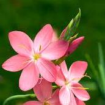

.png)
La biographie d'une plante appélé Gem.
Je suis un type de fleur appélé Hesperantha coccinea "sunrise". Dans cette biographie je vais vous parler de: ma nourriture préféré, des informations générales, et finalement, mon environnement idéal!
Hesperantha coccinea
Hesperantha coccinea (lis des Cafres2, Lis de rivière ; syn.
Schizostylis coccinea Backh. et Harv.) est une espèce de plantes à
fleurs de la famille des Iridaceae, native d'Afrique du Sud et du
Zimbabwe. C'est une vivace semi-persistante à croissance rapide, avec
une feuille mince lancéolée jusqu'à 40 cm de long et 1 cm de large. Les
fleurs sont rouges, parfois roses ou même blanches, de 30 à 35 mm de
diamètre, avec six pétales ; elles sont au nombre de quatre à dix
alternativement sur un épi à la fin de l'été et en automne.
Elle est cultivée pour ses fleurs comme plante ornementale dans les
jardins, utilisée aussi en fleurs à couper. Sa limite de résistance au
froid est entre -5 °C et -10 °C. Dans les régions plus froides, elle est
cultivée sous abris3. Il est parfois connu en culture comme Lis des
"Cafres". Le lis des "cafres" est considéré comme invasive dans
certaines parties de l'Afrique.
Alimentation
Comme les autres plantes, j'ai besoin d'eau et de nutriments pour grandir. Je préfère un sol limoneux bien drainé qui retient l'humidité mais ne devient pas gorgé d'eau. Un mélange de terre de jardin avec de la matière organique comme le compost fonctionne bien. Assurer un bon drainage pour éviter la pourriture mes racines.
Environnement
J'aime aussi une lumière vive et indirecte et des températures modérées. Je prospère dans les environnements à humidité modérée et doit être arrosé régulièrement pour garder le sol uniformément humide. Pendant ma période de dormance en hiver, j'ai moins soif donc vous pouvez réduir les arrosages.
Lien ou j'ai trouvé les infos: https://earthone.io/fr/plant/hesperantha%20coccinea?srsltid=AfmBOooYqYw2d8Mb594fwU_XD7bqNYMQdqMaOLxgIu-_yob2_1Eitq-Y